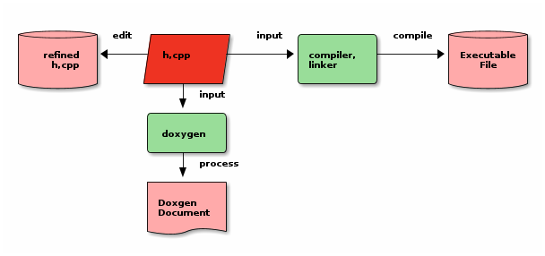
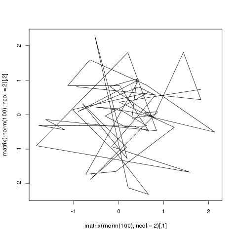

Excerpts: Here is excerpts.
1 Header
blod text
italic text
code text
underline text
delete text text text text text text
text text text text text text text text text text text text text text text text text text text text text text text text text text
2 Table
| Name | Phone | Age |
|---|---|---|
| Peter | 1234 | 17 |
| Anna | 4321 | 25 |
| Sede | Max cites | H-index |
|---|---|---|
| Chile | 257.72 | 21.39 |
| Leeds | 165.77 | 19.68 |
| Sao Paolo | 71.00 | 11.50 |
| Stockholm | 134.19 | 14.33 |
| Morelia | 257.56 | 17.67 |
3 Block quotes
Great clouds overhead
Tiny black birds rise and fall
Snow covers Emacs
– AlexSchroeder
Everything should be made as simple as possible, but not any simpler – Albert Einstein
4 Code
4.1 code surround by ‘#+BEGIN_EXAMPLE’
def show
@widget = Widget(params[:id])
respond_to do |format|
format.html # show.html.erb
format.json { render json: @widget }
end
end
4.2 code surround by ‘#+BEGIN_SRC’
def show @widget = Widget(params[:id]) respond_to do |format| format.html # show.html.erb format.json { render json: @widget } end end
4.3 code surround by ‘#+BEGIN_SRC’, enable number line and inner reference
4.4 code highlight by pygments
4.4.1 syntax by backtick
1
2
3
4
5
6
7
def show
@widget = Widget(params[:id])
respond_to do |format|
format.html # show.html.erb
format.json { render json: @widget }
end
end
4.4.2 syntax by ‘codeblock’
1
2
3
4
5
6
7
def show
@widget = Widget(params[:id])
respond_to do |format|
format.html # show.html.erb
format.json { render json: @widget }
end
end
4.4.3 syntax by ‘highlight’
def show
@widget = Widget(params[:id])
respond_to do |format|
format.html # show.html.erb
format.json { render json: @widget }
end
end
6 Links
link to aother post
7 Image
7.1 independent image
Figure 1: demo image cowfish
text text text text text text text text text text text text text
7.2 image surround by text
Figure 2: demo image cowfish
text text text text text text text text text text text text text text text text text text text text text text text text text text text text text text text text text text text text text text text text text text text text text text text text text text text text text text text text text text text text text text text text text text text text text text text text text text text text text text text text text text text text text text text text text text text text text text text text text text text text text text text text text text text text text text text text text text text text text text text text text text text text text text text text text text text text text text text text text text text text text text text text text text text text text text text text text text text text text text text text text text text
8 Attachment
9 Math
9.1 latex fragment
9.2 latex source code
\begin{equation} \Pr(X_t=j|X_{t-1}=i) = \frac{j(j-1)}{2}\Big(\frac{i}{N}\Big)^j\Big(\frac{N-i}{N}\Big)^{n-j} \end{equation}
10 Auto generated image
10.1 latex result to image file
Image background will be effect by your emacs environtment.
\begin{equation} \Pr(X_t=j|X_{t-1}=i) = \frac{j(j-1)}{2}\Big(\frac{i}{N}\Big)^j\Big(\frac{N-i}{N}\Big)^{n-j} \end{equation}

10.2 ditaa
+----------+ edit +----------+ input +----------+ compile +----------+
| cPNK | | cRED | | cGRE | | cPNK |
| refined |<-----+ h,cpp +-------->+ compiler,+-------->+Executable|
| h,cpp | | | | linker | | File |
| {s} | | {io} | | | | {s} |
+----------+ +----+-----+ +----------+ +----------+
| input
v
+----------+
| cGRE |
| doxygen |
| |
+----+-----+
| process
v
+----------+
| cPNK |
| Doxgen |
| Document |
| {d} |
+----------+

10.3 dot
digraph G {
size="8,6"
ratio=expand
edge [dir=both]
plcnet [shape=box, label="PLC Network"]
subgraph cluster_wrapline {
label="Wrapline Control System"
color=purple
subgraph {
rank=same
exec
sharedmem [style=filled, fillcolor=lightgrey, shape=box]
}
edge[style=dotted, dir=none]
exec -> opserver
exec -> db
plc -> exec
edge [style=line, dir=both]
exec -> sharedmem
sharedmem -> db
plc -> sharedmem
sharedmem -> opserver
}
plcnet -> plc [constraint=false]
millwide [shape=box, label="Millwide System"]
db -> millwide
subgraph cluster_opclients {
color=blue
label="Operator Clients"
rankdir=LR
labelloc=b
node[label=client]
opserver -> client1
opserver -> client2
opserver -> client3
}
}
10.4 plantuml
title Example Sequence Diagram activate Client Client -> Server: Session Initiation note right: Client requests new session activate Server Client <-- Server: Authorization Request note left: Server requires authentication Client -> Server: Authorization Response note right: Client provides authentication details Server --> Client: Session Token note left: Session established deactivate Server Client -> Client: Saves token deactivate Client
10.5 asymptote
import geometry; size(7cm,0); picture pic; // on définit une courbe reliant les points (0,1) et (1,0) path c=(0,1){dir(-5)}..{dir(-5)}(1,0); // à l'aide de trois rotations, on définit // le motif (dans un carré de 2 sur 2) ... path motif=buildcycle(c,rotate(90)*c, rotate(180)*c,rotate(-90)*c); filldraw(pic,motif,lightred+white,black); // ... et une double boucle pour "paver" // suivant (Ox) et suivant (Oy) for(int i=0; i<n; ++i) { for(int j=0; j<n; ++j) { add(shift(2*i,2*j)*pic); } }
10.6 r language
plot(matrix(rnorm(100), ncol=2), type="l")

10.7 octave
figure( 1, "visible", "off" ); sombrero; print -r90 -dpng ../images_autogen/20130912-demo_octave.png; ans = "../images_autogen/20130912-demo_octave.png";
Footnotes:
http://www.footnote2.com, this is a long description for the footnote